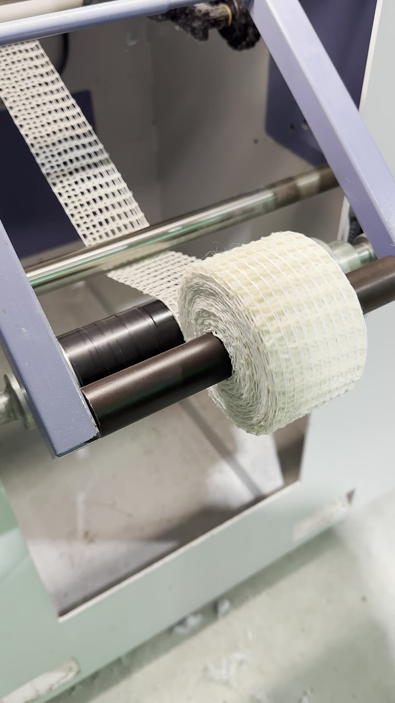

Netting for mortadella
Non-elastic net with the square size your process needs, diamond or hexagonal, for large-calibre mortadella.

- Non-elasticdiamond or hexagonal
- Square made to measure
- 100 m roll
- Ø165 to Ø195fibrous casing for mortadella

Net and casing for mortadella
The non-elastic net contains the piece and leaves an even mark. It is combined with Fibrø® fibrous casing Ø165 to Ø195. Tell us the calibre of your mortadella and we make the net.
Frequently asked questions
Does it also work for Milano salami?
Yes: for Milano salami we use the same made-to-measure non-elastic net, with Ø80, 95 or 107 fibrous casing.